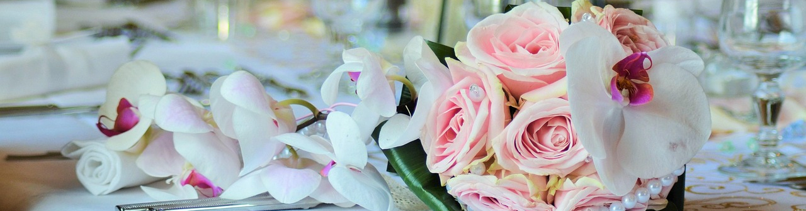

He looks up and his heart skips a beat. "You've never looked so beautiful, so radiant, so... so like you."
Our Story
This forever moment begins when you enter Ana Marie's Bridal. We take the time to get to know you and your style, then help you find a complete look for your special day.
You'll find styles unique to this area, complete with veils, shoes and jewelry. Gather your family and friends, make an appointment and come experience Ana Marie's Bridal - where forever takes shape.